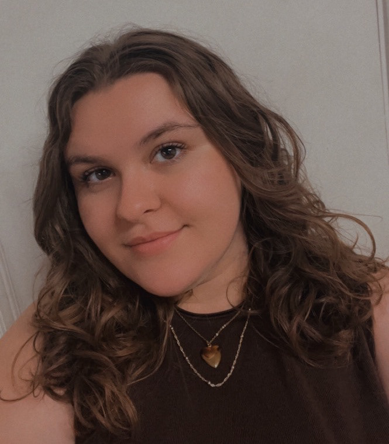

Text 2 Sign was made by 2 people for a Javascript Course at CSUMB:
Gianna Powers
Gianna Powers is a 2nd year transfer in the CST program. She likes hockey, board games, and superheroes. She has creative experience in
photography and logo design. Her dream career after graduation is to work in the visual marketing team for a major sports team. From this
course, Gianna hopes to learn more about creative interactive designs that are engaging for users.
This website was designed by Gianna!
Zionna Brown
Zionna Brown is a 3rd year transfer in the CST program with a focus on game design. She likes fantasy, exploration games, and crafts. She has experience
in narrative, character, and UX design, and is currently working on a few narrative-driven puzzle games that she hopes to release on Steam. From this course,
Zionna hopes to learn Javascript in a way that can add engaging interactivity to her web design.
This website was programmed by Zionna!